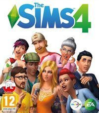
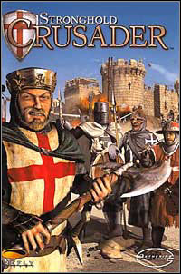
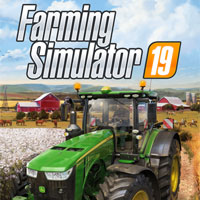
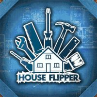

All about games

The Sims 4 na PC, PS4 i XONE to kolejna część serii popularnych na całym świecie wirtualnych symulatorów życia.
Podobnie jak w przypadku poprzednich odsłon cyklu,
za jego produkcję odpowiada amerykańskie studio Maxis.
Pierwsze The Sims ukazało się jeszcze w 2000 roku.
Jego pomysłodawcą był Will Wright, założyciel Maxis i twórca SimCity oraz innych pokrewnych mu gier z Sim w tytule.

Stronghold: Crusader to sequel świetnej gry strategicznej Stronghold (w Polsce Twierdza),
tym razem przenoszący nas do świata Bliskiego Wschodu w epoce wypraw krzyżowych (XI – XII wiek).
Podobnie jak poprzednik, Stronghold: Crusader jest określany mianem „symulator twierdzy”.
Gracz może od podstaw wybudować swoją twierdzę, zapewnić jej ludności i żołnierzom wyżywienie oraz odeprzeć niejeden potężny atak.

Farming Simulator 19 jest kolejną odsłoną znanego cyklu symulatorów,
w których wcielamy się w rolnika.
Gra oferuje dwie duże, otwarte i pełne różnego rodzaju zadań lokacje oraz setki maszyn i pojazdów,
które możemy wykorzystać przy pracy.
Za stworzenie omawianej produkcji odpowiada niezmiennie studio GIANTS Software.

House Flipper to ciekawy symulator inwestora-budowlańca od polskiego studia Empyrean.
Wydawcą tytułu została firma PlayWay,
znana z takich projektów jak Car Mechanic Simulator i Operator numeru alarmowego.